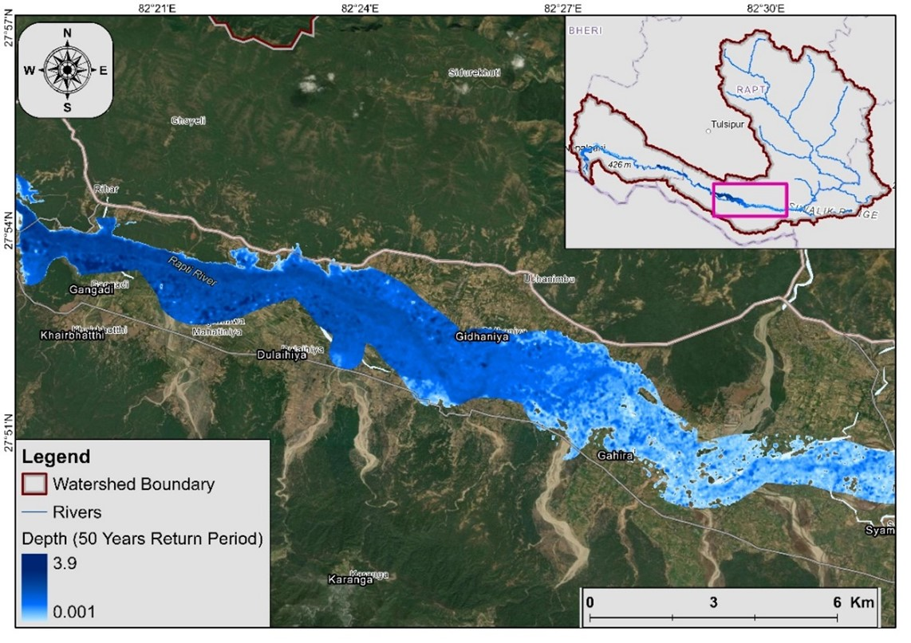

Featured Projects

Soil Erosion Mapping
Analyzed soil erosion rate of districts in Bagmati Province using RUSLE Method
African Elephant Habitat Modeling
Modeled habitat preferences in Tarangire National Park using GPS collar data

Flood/Overland Flow Modeling
Created flood hazard maps for West Rapti Basin and identified vulnerable communities

Multi-hazard and Risk Mapping
Conducted multi-hazard risk assessments and developed risk maps for the Sindhupalchowk District